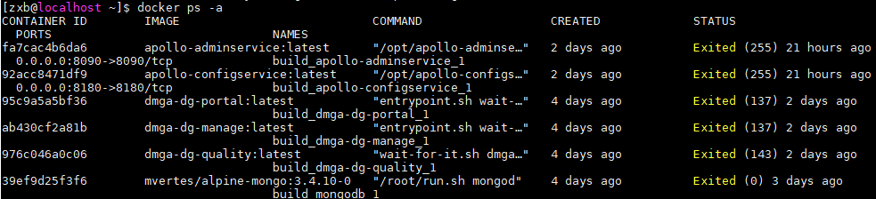

容器系列（一）：Docker环境准备
文章目录
1. 安装Docker
根据宿主机操作系统，选择对应版本的安装方法。
CentOS：https://docs.docker.com/install/linux/docker-ce/centos/
2. 使普通用户可执行docker命令
默认情况下， docker 守护进程是绑定到了一个 Unix socket ，并且只有 root 用户可以访问这个 Socket ，所以在执行 docker 命令时只能使用 sudo 命令执行。
高版本的 Docker 中支持了使用非 root 用户执行 docker 命令，具体参考官网参考文档。
1. 创建docker用户组
|
|
2. 添加用户到docker用户组
|
|
3. 重新登录 重新登录会话，使用户组更改可生效 4. 测试使用命令
|
|

3. 迁移docker数据目录
由于是在本机虚拟机上，根目录的磁盘空间并不大，在安装完 docker 并下载了一些镜像后，发现磁盘空间不够用，所以就涉及到将 docker 的数据目录迁移到其它存储空间足够的盘上。
docker 默认是将数据存储在 /var/lib/docker 目录下的，修改存储路径需要修改 docker 配置文件并重启 docker 服务。
具体步骤如下：
1. 将 docker 停止
|
|
2. 移动docker数据目录
本次操作前，已经下载及制作了部分镜像。为方便使用，这里将原先的数据移动到新目录 /docker/data 下。
|
|
3. 重新指定数据目录
vim /etc/docker/daemon.json，添加"data-root": "/docker/data"配置。例如：
1 2 3 |
{
"data-root": "/docker/data"
} |
4. 启动docker服务
|
|
4. 配置docker hub镜像地址
在使用 docker pull 下载 Docker Hub 上的镜像时，因为网络问题访问速度较慢。基于这种情况，国内提供了很多 docker hub 镜像私服。
| 镜像名称 | 镜像地址 | 备注 |
|---|---|---|
| Docker中国官方镜像 | https://registry.docker-cn.com | |
| Azure中国镜像 | https://dockerhub.azk8s.cn | |
| 科大镜像 | https://docker.mirrors.ustc.edu.cn | |
| 阿里云 | https://<your_code>.mirror.aliyuncs.com |
需要登录，获取code |
| 七牛云 | https://reg-mirror.qiniu.com | |
| 网易云 | https://hub-mirror.c.163.com | |
| 腾讯云 | https://mirror.ccs.tencentyun.com |
配置Docker Hub镜像
编辑 daemon.json 文件：vim /etc/docker/daemon.json，添加配置：
|
|
使用 docker info 命令可以查看当前配置的 Docker Hub镜像 信息。
|
|
5. 配置docker代理
在编写 DockerFile 构建镜像时，在RUN一些命令时，如 apt add ， curl 等命令，如果未配置代理，连接及下载会非常慢。
参考官方文档，可以为 docker 配置代理。
配置步骤
- 编辑
~/.docker/config.json文件，如果没有则创建一个。 添加如下配置
1 2 3 4 5 6 7 8 9 10 11{ "proxies": { "default": { "httpProxy": "http://192.168.52.1:1080", "httpsProxy": "http://192.168.52.1:1080", "noProxy": "aliyun.com,192.168.52.1" } } }请根据实际情况替换为自己的代理地址 * httpPorxy：配置http代理 * httpsProxy：配置https代理 * noProxy：配置哪些域名不走代理。
aliyun.com表示该域名及其子域名不走代理，*.aliyun.com表示其子域名不走代理。
提示：
值得一提的是，配置代理后wget命令好像一直未走代理，此问题 待解决 。
文章作者 张雄彪
上次更新 2019-09-29